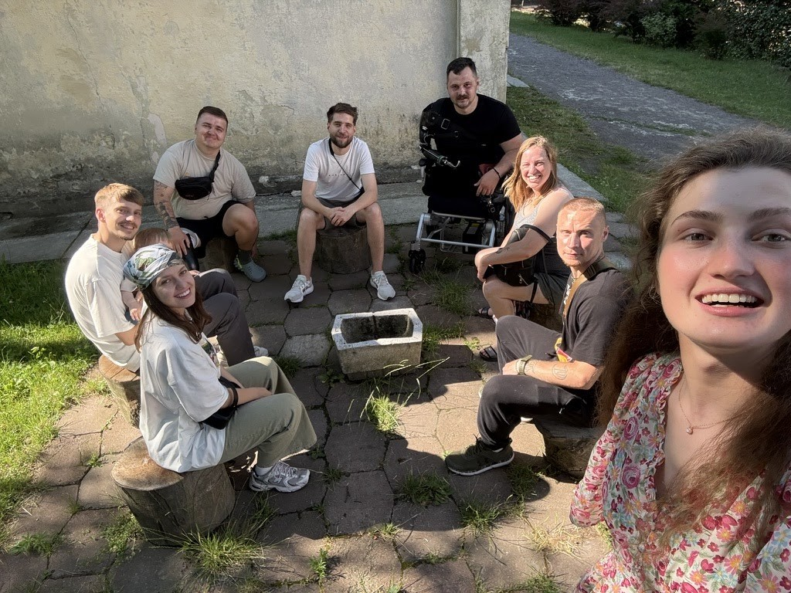

Літо поруч із ветеранами
Дорогі друзі, щиро вас вітаю!
Дякую, що залишаєтесь поруч у молитві та підтримці. Це дуже підбадьорює й додає сил у служінні ветеранам. Хочу поділитися кількома новинами останніх тижнів.

Навчання з психологічної підтримки
У червні я закінчив курс від ІЛУК на тему «Психологічна підтримка військових та їхніх сімей». Для мене це стало великим благословенням - особливо частина про контузії, адже ця тема дуже близька багатьом ветеранам. Тепер маю трохи більше знань, які зможу передавати іншим. На курсі були дружини військових, капелани, брати й сестри воїнів. У кожного — своя особиста історія війни. Це ще раз нагадало, наскільки глибоко війна торкнулася кожної сім’ї в Україні.
Спілкування з Майклом
Продовжую спілкуватися з Майклом. Ми разом були в кіно, він відвідує церкву, знайомиться з українською культурою та ветеранами. Майкл планує залишитися в Україні й служити як інструктор. Для мене це велика радість — бачити, як він поступово асимілюється й будує тут життя. Також мали гарну зустріч з іншими ветеранами де він мав можливість познайомитись з сімʼями які були дотичні до війни, з ветераном який має також ампутацію.
Джиу-джитсу та спільнота
Ще один важливий крок для мене — долучення до клубу з джиу-джитсу. Це середовище ветеранів і людей зі схожим духом. Спорт і спільні тренування об’єднують, це допомагає мені покращувати свій ментальний стан і тут у мене з’являється можливість запрошувати інших хлопців, яких я зустрічаю через служіння, тому це гарний момент де я можу допомогти собі та іншим хлопцям.
Конференція в липні
Наприкінці липня мав нагоду побувати на конференції, де познайомився з багатьма новими людьми та з частиною команди, яка зараз формується в нашій місії. Це було хороше підбадьорення й час нових знайомств.
Ветеранські вечори
Ми продовжуємо організовувати «ветеранські вечори». Це час глибоких розмов, де хлопці відкриваються й діляться своїм болем, історіями служби, своїми сумнівами. Двоє хлопців уже двічі були в церкві після таких зустрічей. Для мене це дуже важливо: створювати простір, де вони можуть бути собою й відчувати прийняття. Ми також залучаємо членів церкви, щоб руйнувати стереотипи й допомагати двом світам — церковному й ветеранському — ближче пізнати одне одного.
Пікнік у парку
Окремою радістю став пікнік. Хвилювався, чи прийдуть хлопці, але молилися, і Бог благословив шістьма учасниками. Серед них був колишній військовополонений з «Азовсталі». Це були дуже щирі розмови — від спогадів дитинства до планів на майбутнє. Я бачу, як навіть у невизначеності ветерани прагнуть будувати життя далі, і це надихає.
Ветеранський простір
Зараз ми готуємо відкриття ветеранського простору. Це місце, де ветерани зможуть приходити на освітні заходи, майстер-класи, групові зустрічі та просто спілкуватися в безпечній атмосфері. Ми хочемо, щоб він став точкою підтримки, соціалізації та духовного росту. Це новий крок для нашого служіння, і молимося, щоб Бог благословив його розвиток. (те як має виглядати лекторій).
З оригінального листа
Молитовні потреби
Будь ласка, підтримайте в молитві:
- подяка за курс і нові знання, щоб вони допомагали служити ветеранам і їхнім сім’ям;
- за Майкла — щоб він міг інтегруватися в Україну та знайти своє місце в Україні;
- за спільноту ветеранів у спорті, щоб через спорт народжувалась довіра й дружба;
- за хлопців, які приходять на вечори та пікніки, щоб їхні серця були відкриті до Бога;
- за ветеранський простір — щоб він успішно відкрився й став справжнім місцем відновлення та надії.
Стати партнером
Дякую, що підтримуєте це служіння молитвою та участю.
Як я можу молитися за вас?
Напишіть мені — буду радий почути ваші новини й молитовні потреби.
Написати мені